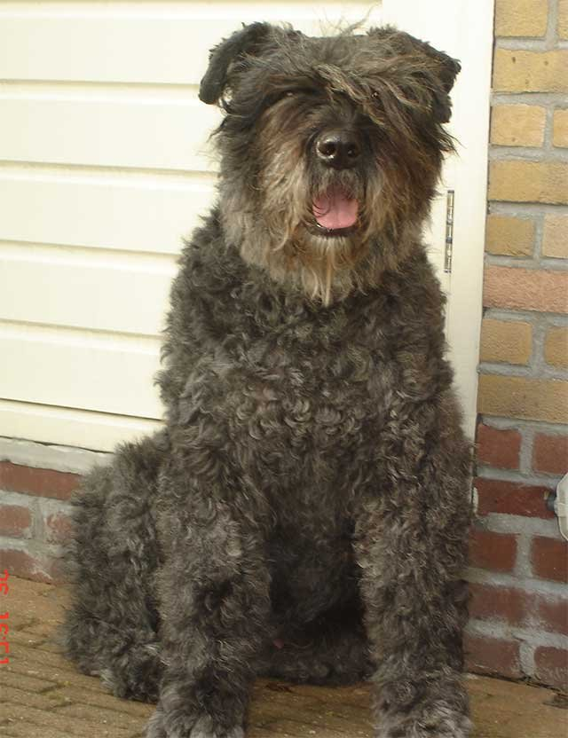
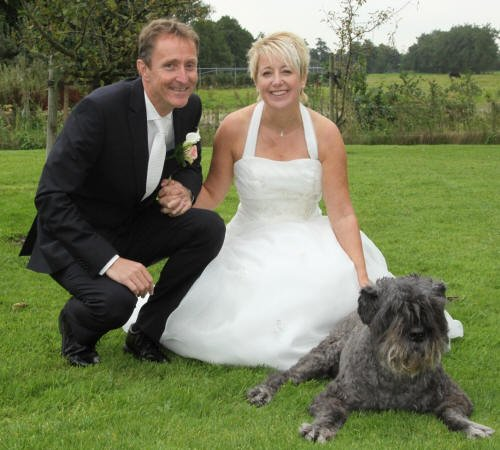
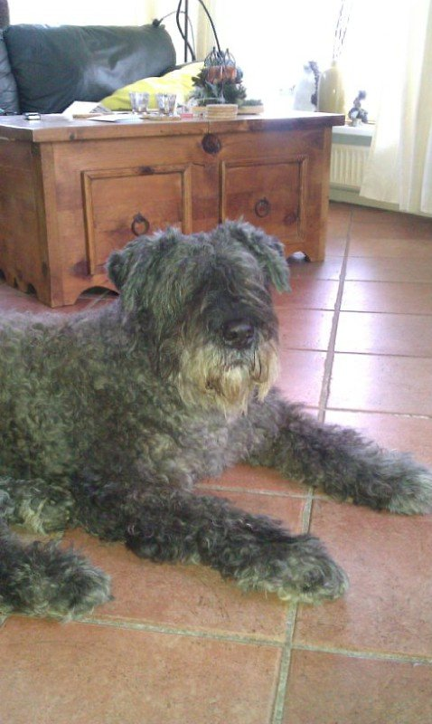

In memoriam: Nada Debby

In Memoriam
'Hare Majesteit'
Nada Debby fan it Hanenhiem
19-04-1998–23-08-2013
Onze doorzetter, hond met 'een kop' er op is niet meer. Tot het laatst toe bleek ze een enorme wilskracht te hebben.
Nada, je kunt een boek over haar schrijven, en nog zou dat niet genoeg zijn...
Ze is opgevoed door Rosca en Cyvah. En dat kon je merken ook. Deze twee eigenzinnige dames, met een hele goede sensor voor gevoelens van anderen, hebben dit zeer goed doorgeven aan Nada. Al zal erfelijkheid hier ook wel een rol in gespeeld hebben.
Nada is als tweejarige hond met Froukje mee verhuisd. Ze trainden samen voor IPO. Nada vond dit heel leuk, en ook wel weer eng, maar deed het toch met veel plezier. Bij de gehoorzaamheidsoefeningen was het een strijd tussen baas en hond wie nou eigenlijk baas was. Tijdens de af-oefeningen met baas op afstand, liet Nada regelmatig horen dat ze er nog was en dat ze zich afvroeg of ze niet vergeten werd. En ze kon goed speuren.. tenminste.. als ze er zin in had. Toen ze nog maar net verhuisd was werd ze ziek. Ze was wat sloom en bleek ergens een ontsteking te hebben. Men kon er niet achter komen waar en de medicijnen sloegen niet aan. Ze moest in die tijd ook VZH-examen doen en was daar niet met de kop bij. Ze zakte dan ook. Dit keer was het geen dwarse kop. Froukje maakte zich zorgen, maar anderen zeiden dat ze Nada harder moest aanpakken. Hier ging ze niet in mee, want voor haar gevoel was er iets met Nada aan de hand. Toen Nada een paar weken later op een zonnige ochtend in juni na het speuren van haar stokje ging en een tel later ook weer stond, schoven de trainer en anderen het op het warme weer en direct na het speuren de slipketting er weer op. Bij het IPO-examen deed ze mee als 'witte hond'. En ook toen rommelde ze maar wat aan. Spelen met de bal deed ze wel. En ook de keurmeester vond dat ze harder aangepakt moest worden, want als ze wel met de bal speelde dan was er niets aan de hand. En ze maakte ook geen zieke indruk. Froukje besloot om Nada in de rust te zetten wat trainen betreft. Misschien dat dat zou helpen. In oktober heeft ze zonder training VZH-examen gedaan bij de bouvierdressuurgroep Groningen. Hier slaagde ze met de hakken over de sloot. Nada vond het tijdens het lopen naar boven van het programma heel leuk om te kijken naar de mensen die bij de kantine stonden. Ze liep bijna achterstevoren met Froukje mee. Misschien stonden er wel bekenden bij, je weet het nooit. Door de groep heen lopen vond ze ook heel gezellig. Ze ging bij bijna alle mensen even kijken of ze ook iets lekkers hadden, behalve bij haar trainer, want ze wist wel dat dat niet verstandig was. Ze vloog direct op de auto van de keurmeester af toen ze los op een parkeerterrein moest. Ze kwam wel weer direct bij Froukje terug toen die riep. Waarschijnlijk omdat ze had gezien hoe groot die honden waren. De keurmeester vond dat je enthousiasme ook moest belonen, dus geslaagd. Een paar weken later ging ze tijdens het spelen op het veld weer van haar stokje. Opnieuw naar de dierenarts, want er was toch wel echt iets met haar aan de hand. De dierenarts verwees haar door naar de kliniek in Leeuwarden. Toen Nada binnenkwam hoopte de dierenarts, die haar een prachtige, gespierde hond vond, dat ze een sporthart zou hebben. Helaas.. Nada haar niet te vinden ontsteking was haar op de hartspier geslagen en ze moest stoppen met trainen. Door de pijn was ze van haar stokje gegaan. Deze enorme bikkel was, zoals Froukje al dacht, helemaal niet dwars maar voelde zich niet lekker. En ondanks dat ze zich niet lekker voelde wilde ze toch doorgaan, alleen kon ze door de pijn de kop er niet altijd bij houden. Nada ging in de rust en aan de medicijnen. Na verloop van tijd kon ze van de medicijnen af. Nada trainde niet meer en zij en Froukje vonden dat best heel moeilijk. Orin ging dan wel mee en dat vond Nada moeilijk. Ze kon niet mee naar de club omdat ze zich dan weer te druk zou maken. Ook daar legde ze zich op een gegeven moment bij neer.
Nada had een eigenzinnig karakter. Zij bepaalde en iedereen had zich daar eigenlijk maar bij neer te leggen. Wij waren haar personeel . Als we op vakantie gingen dan ging Nada meestal naar Froukje haar ouders (hoezo bijzondere behandeling?) Als we dan terugkwamen en haar op gingen halen dan werden we bijna compleet genegeerd. Als we dan opstonden om naar huis te gaan dan stond Nada heel snel bij de voordeur. Het zou haar niet nog een keer gebeuren dat we haar zomaar achter lieten. Thuisgekomen negeerde ze ons eerst nog even en ging dan als een ware koningin, zittend achter in de tuin, haar koninkrijk bekijken. Daarna mochten wij haar wel weer aaien.. Ze bleef ook tot op hoge leeftijd baas over de andere twee honden. Al kon ze die niet meer aan als Vedra het gevecht aanging. Wat van haar was, was van haar en daar moesten de andere twee van af blijven. Vedra en Bowie accepteerden dat meestal.
Nada was een hond die aanvoelde hoe de stemming van mensen was. Als Froukje last van haar rug had, dan liep Nada ook met een kromme rug. Froukje kon aan het gedrag van Nada zien of mensen lekker in hun vel zaten. Mensen die niet lekker in hun vel zaten daar ging Nada bij zitten en gaf steun op haar manier. Zij werden dan niet gedwongen om te blijven aaien zoals ze bij andere mensen wel deed. Ze was er dan gewoon. Als ze mensen niet mocht, dat waren er niet zoveel, dan liet ze dat ook merken door zacht te grommen.
De laatste jaren had Nada, door een hernia, moeite met lopen. Toch bleef ze doorzetten. Ze was ijzersterk. En het hart bleek ook ijzersterk. Toen het lopen niet meer ging hebben we het besluit moeten nemen om haar te laten inslapen. Dat was heel moeilijk, want de kop wilde nog wel maar het lijf niet meer. Toen het besluit genomen was wilde Nada niet bij Froukje weg. Ze werd heel onrustig en begon te janken als ze niet in de buurt was. De volgende dag, toen de dierenarts zou komen, is ze bij Froukje gaan liggen en was het goed. Vedra week de hele dag niet van haar zijde. Bowie ging in de kennel liggen en nam afstand.
We missen een geweldige, bijzondere hond. Een hond die heel veel heeft gegeven en die ontzettend trouw was. We missen haar, maar we weten ook dat we heel lang van haar hebben mogen genieten. Veel langer dan dat we gedacht hadden. Voor Nada is het goed zo.
Bedankt kanjer, voor alle liefde en trouw en nog veel meer.

